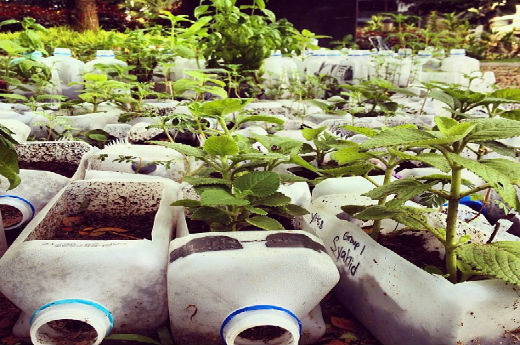

 One of the major impacts that bottled water has is its cost. It is estimated that bottled water is 500 times more expensive than tap water. In 2006 alone, the United States spent over $11 Billion on bottled water. In one university, the student population is a little over 32,000 students. In the time span of one week, if each of these students purchased a 20 oz bottle of water, it would be equivalent to 640,000 oz or 5,000 gallons of bottled water per week. If each of these bottles is $2.00, the student population is spending $64,000 a week. College students are often trying to save money anywhere they can. The amount of money that students needlessly pay for bottled water could be put to better uses. This example of the student population also demonstrates the impact that bottled water use has on the environment. In the example, the amount of bottles is also equivalent 32,000 plastic bottles a week that are typically thrown away. Not only is this extremely wasteful, it also has effects on the carbon footprint or "the total amount of greenhouse gases produced to directly and indirectly support human activities, usually expressed in equivalent tons of carbon dioxide (CO2)." The bottled water industry impacts the carbon footprint on several levels. First, the processes used to create the bottles that the water is stored in contribute to the carbon footprint. According to Live Science, "An estimated total of the equivalent of 32 million to 54 million barrels of oil was required to generate the energy to produce the amount of bottled water consumed in the United States in 2007". The burning of this fuel in the production of the bottles emits CO2 into the atmosphere. Secondly, the bottles must then be transported to wherever they are being sold. The methods of transport need to burn fuel to get to their destinations and, therefore, also contribute to the carbon footprint. And finally, because only a limited number of water bottles can be recycled, most bottles end up in landfills (an estimated 60 million per day) or are incinerated. According to The Water Project, "bottles used to package water take over 1,000 years to bio-degrade and if incinerated, they produce toxic fumes". If the students purchase these bottled waters they are contributing to the processes (the creating, transporting and destroying the bottles) that all contribute to the carbon footprint. There are many ways in which GMU can change its bottled water footprint. One way is to switch from using bottled water to tap water. Students can refill their plastic water bottles multiple times or purchase a reusable water bottle that can be filled with tap water. Changing this habit will in the long run save students thousands of dollars that can be put to other uses. Students can also be sure to recycle the bottles. This will reduce the likelihood of the bottles ending up in landfills. The university can also help by making drinking fountains and water bottle filling stations available to students around the campus. By changing a few simple habits, students and regular civilians can both save money and reduce the carbon footprint produced.
Think Outside Bottle
Global Citizenship
Plastic Free
Plastics Make It Possible